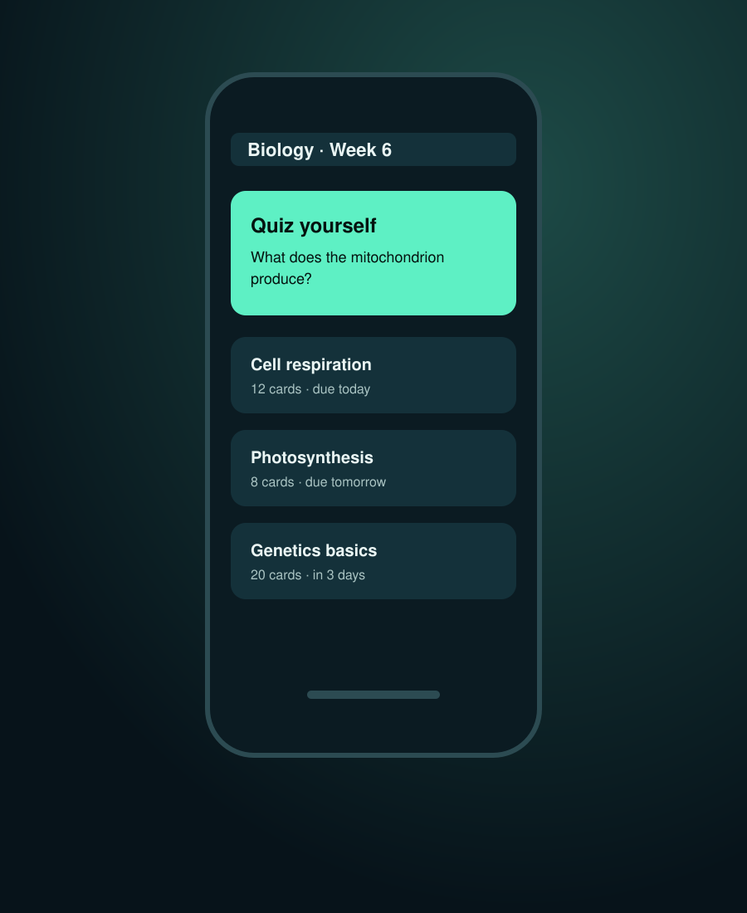

Students
Three courses, daily quiz, basic spacing.
Seed roundExample deck · fictional company
Turns any lecture into ten minutes of daily recall practice.
Why now

The product
Upload a lecture. Orbit writes recall questions, schedules them with spaced repetition and shows what you are about to forget.
How it works
Import slides, PDFs or typed notes from any course.
Answer a short daily quiz written from your own material.
Reviews space out as answers stick, and return when they slip.
Traction
12,400
Weekly active students across 38 campuses, all from word of mouth.
Illustrative figure for a fictional company.
Traction
12,400
weekly active students
64%
still active after 8 weeks
11
minutes practised per day
Illustrative figures for a fictional company.
Growth
Growth came from students sharing decks before exams.
Illustrative data for a fictional company.
Business model
Three courses, daily quiz, basic spacing.
Unlimited courses, exam mode, progress insights.
Instructors share decks with a whole class.
Competition
Team
The ask
$1.5Mseed
Eighteen months to reach 100 campuses and launch departmental plans.
Illustrative figure for a fictional company.